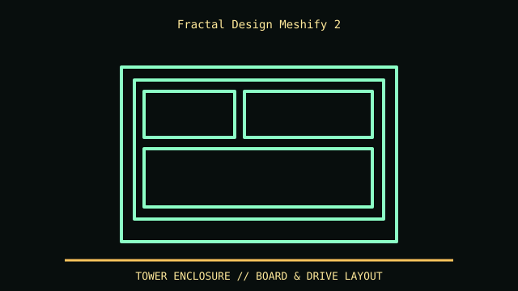

[ MODEL IDENTIFICATION // MESHIFY 2 STANDARD MID-TOWER ]
Fractal Design Meshify 2
542 × 240 × 474 mm (L × W × H); up to 467 mm GPU length with front fan, 185 mm CPU cooler and 250 mm PSU in specified layout.

REVISION CAVEAT: Standard Meshify 2 is distinct from Compact, XL, Lite and Solid variants; check SKU and included drive trays.
Specifications & fit
| Catalog subcategory | Tower and legacy desktop cases |
|---|---|
| Model / generation | Meshify 2 standard mid-tower |
| Dimensions / form factor / clearance | 542 × 240 × 474 mm (L × W × H); up to 467 mm GPU length with front fan, 185 mm CPU cooler and 250 mm PSU in specified layout. |
| Drive bays | Standard layout: up to six 3.5/2.5-inch combination positions plus two dedicated 2.5-inch mounts; added 3.5-inch trays alter layout. |
| Compatibility | E-ATX (up to 285 mm wide), ATX, microATX, Mini-ITX; check wide-board cable/grommet overlap and front radiator effect. |
| Revision identification | Standard Meshify 2 is distinct from Compact, XL, Lite and Solid variants; check SKU and included drive trays. |
Compatibility & preservation notes
E-ATX (up to 285 mm wide), ATX, microATX, Mini-ITX; check wide-board cable/grommet overlap and front radiator effect.
Keep mesh/filter clean; measure GPU with power plug bend and front radiator/fan stack. Retain trays and grommets.
- Record the complete model/SKU, serial/date label, board and bay/backplane identifiers, accessories and manual revision before disassembly.
- For tower cases, measure the installed board width, drive cage, radiator/fan stack, GPU and PSU cable bend as one build; the advertised maximums may compete.
- Keep original brackets, fasteners, trays, feet and front-panel parts labeled with the chassis. Do not force components into modified or incomplete specimens.
Manufacturer, archive & standards sources
- Fractal Design — Meshify 2 specificationsPrimary manufacturer or technical-reference source for this named model; use the exact SKU/document revision.
- Intel — Desktop board form factorsAdditional manufacturer, archival, or dimensional reference. Options and specimen condition can change fit.
Approximate or convention-dependent dimensions are marked as such. Measure the individual unit for restoration, shipping and installation.